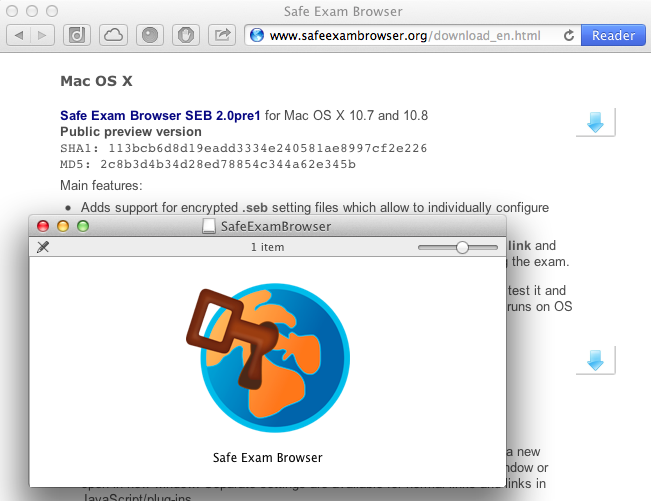
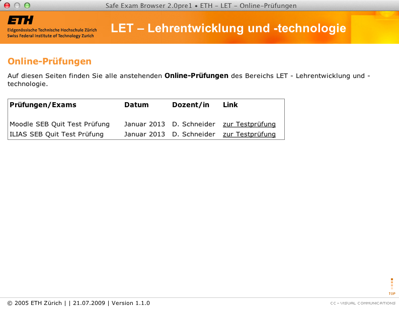
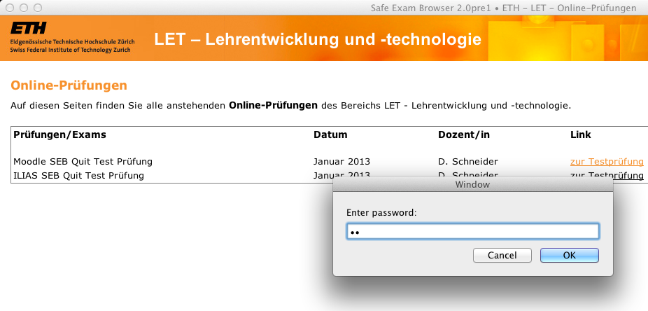
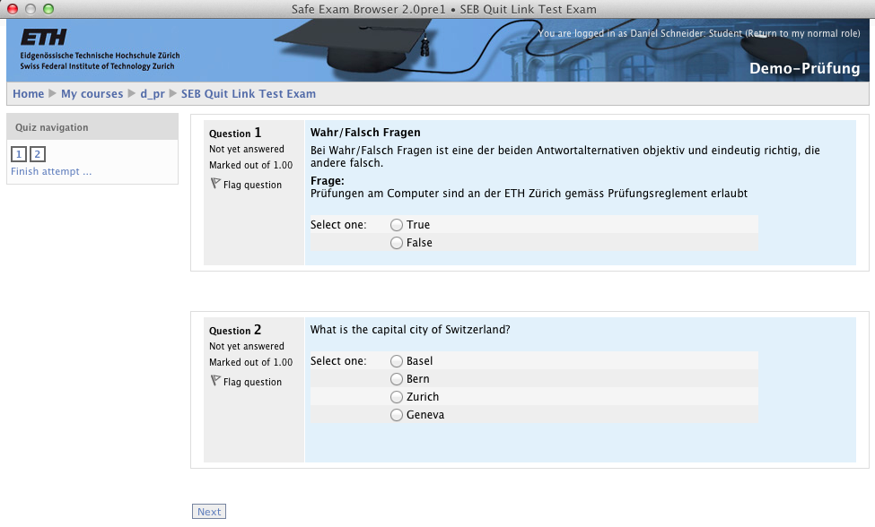
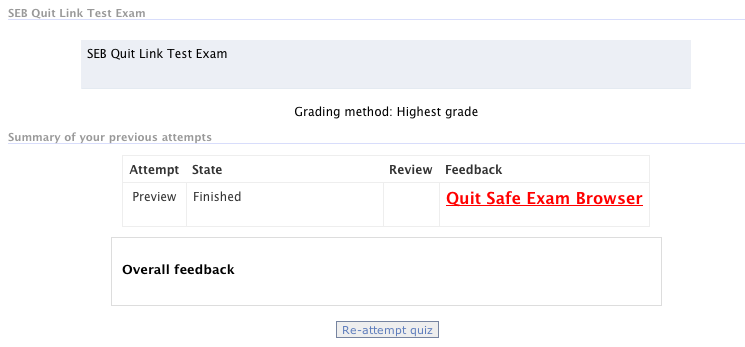
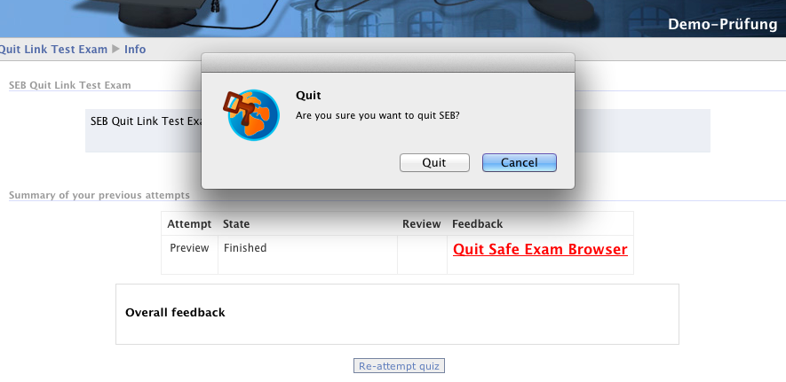

The new Safe Exam Browser 2.0 enables BYOD for examseduhub days 2013 electronic poster session |
Safe Exam Browser (SEB) is being used regularly since 2008 for securing online exams at ETH Zurich and other higher education institutions worldwide. Version 2.0 significantly increases security and minimizes administrative effort by using a new mechanism for remote configuration of SEB. An encrypted file with Safe Exam Browser's own file type ".seb" with all configuration settings can be created while preparing an exam. Calling up this configuration file starts SEB automatically with the corresponding settings.
Short presentation explaining the theory, how SEB is being secured for safe exams also on unmanaged, students' computers.
Safe Exam Browser 2.0 will facilitate secure exams on unmanaged computers like students' own laptops as well as in managed environments and will be relased in Q1 2013 for both platforms Windows and macOS. The first public preview version SEB for macOS 2.0pre1 is already available for testing and contains, besides support for the encrypted .seb setting files, also the new feature to quit SEB after the exam is submitted (without having to enter a quit password or press some specific secret key combination).
If you want to know more about SEB 2.0, you can try it out and study the manual for version 2.0, which will be updated with tuorials explaining how to configure SEB. Also you can subscribe to the SEB news RSS feed to get updated about when new tutorials, documentation and the final version for macOS and Windows becomes available (please note that only the final version 2.0 will be available at the Mac App Store, no preview versions).
Don't know Safe Exam Browser yet?
When students should use Safe Exam Browser 2.0 for exams, only a few steps are necessary to set it up:
Students receive instructions how to install SEB and the initial configuration file for SEB

Students download SEB from safeexambrowser.org or install it from the Mac App Store

After double-clicking the initial configuration file attached to the email, SEB is started and displays the university's exam portal page. There the current exams are linked. Each link acutally downloads a .seb file with the individual SEB settings for that exam.

When clicking the link for an exam, the students are requested to enter a password. This password is actually used to decrypt the .seb settings file just downloaded. The password should of course be communicated just when the exam starts. If the correct password is entered, then SEB applies the new settings defined for this exam, which are stored inside the encrypted .seb file.

SEB starts the exam and by the new settings defined in the exam's .seb file, SEB cannot be quit anymore ...

... at least until the exam is submitted. On the feedback page a quit SEB link has been placed ...

... which allows to exit SEB. After SEB has quit, the student's computer is again in the same state as before the exam.
Of course this is only one possible scenario. For example it would also be possible to e-mail a .seb file which would directly start the exam in SEB (without using an exam portal page). Or you could just send the link to an exam portal page to your students, they would open this in their regular browser and by clicking on the exam link on the portal page they would download and open the according .seb file for the exam, which would start SEB and proceed with the exam.
Anyway, this example demonstrates how easy it is to use Safe Exam Browser on students' computers for online exams. If you have questions, you can discuss SEB 2.0 in our forum.